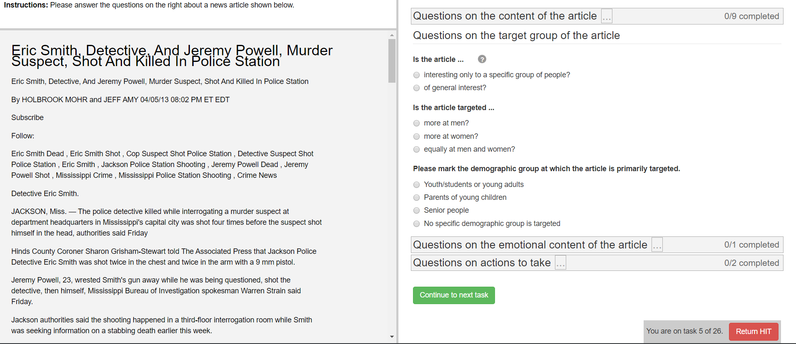

Welcome to Crowdsourcr!¶
Crowdsourcer is an application for conducting survey-like experiments online, especially when used in conjunction with Amazon Mechanical Turk. It is designed to show some number of questions next to some document, such as a news article.
The following is an example from one real experiment:
